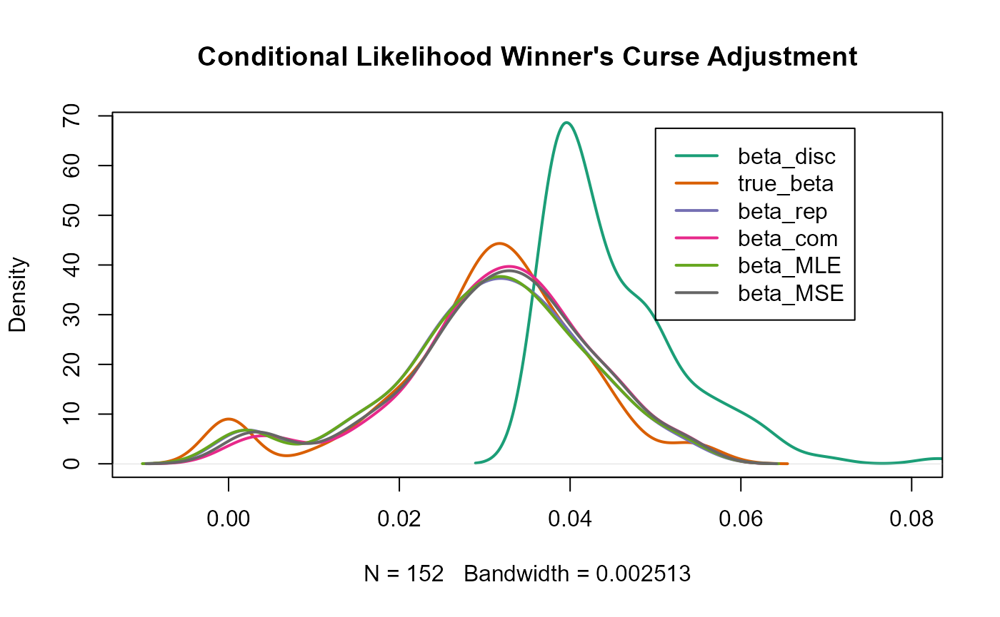

Methods for use with discovery and replication GWASs
discovery_replication.RmdThis package also includes methods which use both a discovery data set and a replication data set in order to obtain a less biased estimate of \(\beta\). Similar to the demonstration of methods which use just the discovery data set, we will first create two toy data sets and then, illustrate how a user may employ the package’s functions to adjust for the bias imposed by winner’s curse. The methods that are currently accessible include:
- Conditional Likelihood method - adapted from Zhong and Prentice (2008)
- UMVCUE method - Bowden and Dudbridge (2009)
It is important to note that with both of these methods, adjustments are only made to SNPs that are deemed significant in the discovery data set, i.e. these SNPs have a \(p\)-value less than that of the specified threshold, \(\alpha\).
A third method has been added which obtains a new association estimate for each significant SNP in the discovery data set using a combination of the discovery and replication estimates:
- MSE minimization method - based on Ferguson et al. (2017)
Addition of toy replication data set
set.seed(1998)
n_snps <- 10^6
effect_snps <- 0.01*n_snps
n_samples <- 300000
maf <- runif(n_snps,0.01,0.5)
true_beta <- rnorm(effect_snps,0,1)
h2 <- 0.7 # variance explained by effect SNPs
var_y <- sum(2*maf[1:effect_snps]*(1-maf[1:effect_snps])*true_beta^2)/h2
true_beta <- true_beta/sqrt(var_y) # scaling to represent a phenotype with variance 1
true_beta <- c(true_beta, rep(0,n_snps-effect_snps))
se <- sqrt((1 - 2*maf*(1-maf)*true_beta^2)/(2*(n_samples-2)*maf*(1-maf)))
stats_disc <- data.frame(rsid=seq(1,n_snps),beta=rnorm(n=n_snps,mean=true_beta,sd=se),se=se)
n_samples_rep <- 300000
se_rep <- sqrt((1 - 2*maf*(1-maf)*true_beta^2)/(2*(n_samples_rep-2)*maf*(1-maf)))
stats_rep <- data.frame(rsid=seq(1,n_snps),beta=rnorm(n=n_snps,mean=true_beta,sd=se_rep),se=se_rep)
head(stats_disc)
#> rsid beta se
#> 1 1 -0.0010527939 0.007847427
#> 2 2 0.0003281513 0.003750554
#> 3 3 -0.0274127318 0.006719281
#> 4 4 -0.0164234966 0.007985377
#> 5 5 0.0330414840 0.002585964
#> 6 6 0.0008226281 0.003142326
head(stats_rep)
#> rsid beta se
#> 1 1 -0.004533234 0.007847427
#> 2 2 0.002738190 0.003750554
#> 3 3 -0.019410836 0.006719281
#> 4 4 -0.019199787 0.007985377
#> 5 5 0.036047493 0.002585964
#> 6 6 0.002438338 0.003142326Method 1: Conditional Likelihood
The function
condlike_repimplements a version of the conditional likelihood method for obtaining bias-reduced estimates of \(\beta\) described in Zhong and Prentice (2008).The function requires as inputs two independent data sets, one representing a discovery GWAS,
summary_disc, and the other a replication study with identical SNPs,summary_rep, as well as a specification of the significance threshold,alpha, to be used. As before, the data sets must be in the form of data frames with columnsrsid,betaandse. It is presumed that SNPs are in the exact same order in both data sets.Furthermore, the parameter
conf_intervalincondlike_repprovides the user with the option to obtain confidence intervals for each of the adjusted association estimates. The default setting isconf_interval=FALSE. Insertingconf_interval=TRUEwhen using the function will return three sets of lower and upper confidence interval boundaries for each SNP, each set corresponding to a particular form of adjusted estimate. The final parameterconf_leveltakes a numerical value between 0 and 1 which specifies the confidence interval, with the default being0.95.In a similar manner to other functions included in the package,
condlike_repreturns a single data frame with SNPs reordered based on significance. However, it only contains SNPs which have been deemed significant in the discovery data set. The first 5 columns of the data frame details the inputted information;rsid,beta_disc,se_disc,beta_rep,se_rep. Following this,beta_comis the inverse variance weighted estimate which is formally defined as:\[\hat\beta_{\text{com}} = \frac{\sigma_2^2 \hat\beta_1 + \sigma_1^2 \hat\beta_2}{\sigma_1^2 + \sigma_2^2},\] in which \(\hat\beta_1\) =beta_disc, \(\hat\beta_2\) =beta_rep, \(\sigma_1\) =se_discand \(\sigma_2\) =se_rep.The method implemented here uses just one selection cut-point at the first discovery stage as opposed to that described in Zhong and Prentice (2008) in which two separate selection thresholds are used. Thus, the maximum likelihood adjusted estimator,
beta_MLEis defined to maximize the conditional likelihood at the observed \(\hat\beta_{\text{com}}\):\[\hat\beta_{\text{MLE}} = \arg \max_{\beta} \log f(\hat\beta_{\text{com}}; \beta).\] The conditional sampling distribution, \(f(x;\beta)\) is approximated by: \[f(x;\beta) = \frac{\frac{1}{\sigma_{\text{com}}} \phi\left(\frac{x-\beta}{\sigma_{\text{com}}}\right) \cdot \left[\Phi\left(\frac{x-c\sigma_1}{\frac{\sigma_1}{\sigma_2}\sigma_{\text{com}}}\right) + \Phi\left(\frac{-x-c\sigma_1}{\frac{\sigma_1}{\sigma_2}\sigma_{\text{com}}}\right)\right]}{\Phi\left(\frac{\beta}{\sigma_1} - c\right) + \Phi\left(- \frac{\beta}{\sigma_1} - c\right)}.\]\(c\) is the selection cut-point, i.e. all SNPs with \(\mid \frac{\hat\beta_1}{\sigma_1}\mid \ge c\) are deemed as significant. The value of \(c\) is easily obtained using the chosen
alpha. In addition, \[\sigma^2_{\text{com}} = \frac{\sigma_1^2 \sigma_2^2}{\sigma_1^2 + \sigma_2^2}.\]Note that this function, \(f(x;\beta)\) is slightly different from that given in the paper as only one selection cut-point is imposed here.
Finally, Zhong and Prectice (2008) noted that simulation studies showed that \(\hat\beta_{\text{com}}\) tended to have upward bias while \(\hat\beta_{\text{MLE}}\) over-corrected and therefore, a combination of the two in the following form was proposed: \[\hat\beta_{\text{MSE}} = \frac{\hat\sigma^2_{\text{com}}\cdot \hat\beta_{\text{com}} + (\hat\beta_{\text{com}} - \hat\beta_{\text{MLE}})^2\cdot\hat\beta_{\text{MLE}}}{\sigma^2_{\text{com}}+(\hat\beta_{\text{com}} - \hat\beta_{\text{MLE}})^2}.\] This \(\hat\beta_{\text{MSE}}\) holds the final column of the outputted data frame in the default setting.
The use of
condlike_repwith our toy data sets in whichconf_interval=FALSEis demonstrated below, with a significance threshold value of10e-6:
out1 <- condlike_rep(summary_disc=stats_disc, summary_rep=stats_rep, alpha=10e-6)
head(out1)
#> rsid beta_disc se_disc beta_rep se_rep beta_com beta_MLE
#> 1 7261 0.05620556 0.002588688 0.05423749 0.002588688 0.05522152 0.05521021
#> 2 1733 0.05391875 0.002583771 0.05362490 0.002583771 0.05377183 0.05375499
#> 3 6510 0.05508898 0.002652792 0.05314707 0.002652792 0.05411802 0.05411178
#> 4 3965 0.05140329 0.002590183 0.05034712 0.002590183 0.05087520 0.05087510
#> 5 7815 0.05197086 0.002680864 0.04711212 0.002680864 0.04954149 0.04953070
#> 6 4998 -0.05051788 0.002636178 -0.04797101 0.002636178 -0.04924445 -0.04923946
#> beta_MSE
#> 1 0.05522152
#> 2 0.05377182
#> 3 0.05411802
#> 4 0.05087520
#> 5 0.04954149
#> 6 -0.04924445\(~\)
Confidence intervals:
Firstly, the \((1-\alpha)\%\) confidence interval for \(\hat\beta_{\text{com}}\) is simply calculated as: \[\hat\beta_{\text{com}} \pm \hat\sigma_{\text{com}}Z_{1-\frac{\alpha}{2}}.\]For \(\hat\beta_{\text{MLE}}\), the profile confidence limits are the intersection of the log-likelihood curve with a horizontal line \(\frac{\chi^2_{1,1-\alpha}}{2}\) units below its maximum. The MSE weighting method, as described above, can then be easily applied to the upper and lower boundaries of these two confidence intervals to obtain an appropriate confidence interval for \(\hat\beta_{\text{MSE}}\). This gives: \[\hat\beta_{\text{MSE};\frac{\alpha}{2}} = \hat{K}_{\frac{\alpha}{2}} \hat\beta_{\text{com};\frac{\alpha}{2}} + \left(1-\hat{K}_{\frac{\alpha}{2}}\right) \hat\beta_{\text{MLE};\frac{\alpha}{2}}\] \[\hat\beta_{\text{MSE};1-\frac{\alpha}{2}} = \hat{K}_{1-\frac{\alpha}{2}} \hat\beta_{\text{com};1-\frac{\alpha}{2}} + \left(1-\hat{K}_{1-\frac{\alpha}{2}}\right) \hat\beta_{\text{MLE};1-\frac{\alpha}{2}}\] in which \(\hat{K}_{\frac{\alpha}{2}} = \frac{\hat\sigma^2_{\text{com}}}{\hat\sigma^2_{\text{com}} + \left(\hat\beta_{\text{com};\frac{\alpha}{2}} - \hat\beta_{\text{MLE};\frac{\alpha}{2}}\right)^2} \;\) and \(\; \hat{K}_{1-\frac{\alpha}{2}} = \frac{\hat\sigma^2_{\text{com}}}{\hat\sigma^2_{\text{com}} + \left(\hat\beta_{\text{com};1-\frac{\alpha}{2}} - \hat\beta_{\text{MLE};1-\frac{\alpha}{2}}\right)^2}.\)
We implement
condlike_repon our toy data sets withconf_intervalnow set toTRUEto show the form in which the output now takes. A similar data frame to that above is returned with 95% confidence intervals also included for each adjusted association estimate for each SNP.
out1_conf <- condlike_rep(summary_disc=stats_disc, summary_rep=stats_rep, alpha=10e-6, conf_interval=TRUE, conf_level=0.95)
head(out1_conf)
#> rsid beta_disc se_disc beta_rep se_rep beta_com
#> 1 7261 0.05620556 0.002588688 0.05423749 0.002588688 0.05522152
#> 2 1733 0.05391875 0.002583771 0.05362490 0.002583771 0.05377183
#> 3 6510 0.05508898 0.002652792 0.05314707 0.002652792 0.05411802
#> 4 3965 0.05140329 0.002590183 0.05034712 0.002590183 0.05087520
#> 5 7815 0.05197086 0.002680864 0.04711212 0.002680864 0.04954149
#> 6 4998 -0.05051788 0.002636178 -0.04797101 0.002636178 -0.04924445
#> beta_com_lower beta_com_upper beta_MLE beta_MLE_lower beta_MLE_upper
#> 1 0.05163385 0.05880920 0.05521021 0.05162762 0.05881552
#> 2 0.05019097 0.05735268 0.05375499 0.05018466 0.05735909
#> 3 0.05044151 0.05779454 0.05411178 0.05043603 0.05780008
#> 4 0.04728546 0.05446495 0.05087510 0.04727927 0.05447123
#> 5 0.04582607 0.05325691 0.04953070 0.04582088 0.05326216
#> 6 -0.05289794 -0.04559096 -0.04923946 -0.05290361 -0.04558524
#> beta_MSE beta_MSE_lower beta_MSE_upper
#> 1 0.05522152 0.05163385 0.05880920
#> 2 0.05377182 0.05019097 0.05735268
#> 3 0.05411802 0.05044151 0.05779454
#> 4 0.05087520 0.04728546 0.05446495
#> 5 0.04954149 0.04582607 0.05325691
#> 6 -0.04924445 -0.05289794 -0.04559096Method 2: UMVCUE
The implementation of
UMVCUEis very similar to the function described above in the sense thatUMVCUErequires the same inputs; discovery and replication data sets in the form of three-columned data frames together with a threshold value,alpha. Furthermore, the outputted data frame is in the same form with just one extra column providing the adjusted estimate,beta_UMVCUE.Selection also occurs here at just one stage - SNPs are deemed as significant if their \(p\)-values corresponding to \(\mid \frac{\hat\beta_1}{\sigma_1}\mid\) are smaller than the given threshold.
The function
UMVCUEexecutes the method detailed in Bowden and Dudbridge (2009). No adaptations have been made to the method described.It is worth noting that, as with all conditional likelihood methods, the method used in
condlike_repmakes adjustments to each SNP one at a time with no information relating to other SNPs required for this adjustment. However, after ordering SNPs based on significance, for a single SNP,UMVCUEalso uses the data of SNPs on either side of it to assist with the adjustment.UMVCUEcan be applied to the toy data sets as followed, withalphaagain specified as10e-6:
out2 <- UMVCUE(summary_disc = stats_disc, summary_rep = stats_rep, alpha = 10e-6)
head(out2)
#> rsid beta_disc se_disc beta_rep se_rep beta_UMVCUE
#> 1 7261 0.05620556 0.002588688 0.05423749 0.002588688 0.05442981
#> 2 1733 0.05391875 0.002583771 0.05362490 0.002583771 0.05282005
#> 3 6510 0.05508898 0.002652792 0.05314707 0.002652792 0.05421483
#> 4 3965 0.05140329 0.002590183 0.05034712 0.002590183 0.05005812
#> 5 7815 0.05197086 0.002680864 0.04711212 0.002680864 0.04699485
#> 6 4998 -0.05051788 0.002636178 -0.04797101 0.002636178 -0.04915451Method 3: MSE minimization
The function
MSE_minimizerimplements a combination method which closely follows that described in Ferguson et al. (2017). The function parameters used here;summary_disc,summary_repandalpha, are precisely of the same form as those previously detailed in this vignette. In addition,MSE_minimizerhas a logical parameter, namelysplinewhich defaults asspline=FALSE.An adjusted estimate is computed for each SNP which has been classified as significant in the discovery data set, based on the given threshold. Thus, similar to the above method,
MSE_minimizerreturns a data frame containing these significant SNPs with 6 columns in which the final column contains the new estimate,beta_joint.Following the approach detailed in Ferguson et al. (2017), we define the adjusted linear combination estimator as: \[\hat\beta_{\text{joint}} = \omega(\hat{B}) \cdot \hat\beta_{\text{rep}} + (1-\omega(\hat{B}))\cdot \hat\beta_{\text{disc}}\] in which \[ \omega(\hat{B}) = \frac{\frac{1}{\sigma^2_{\text{rep}}}}{\frac{1}{\sigma^2_{\text{rep}}}+\frac{1}{\sigma^2_{\text{rep}}+ \hat{B}^2}}.\] Using the default setting for
spline, i.e.spline=FALSE, we simply let \(\hat{B} = \hat\beta_{\text{disc}} - \hat\beta_{\text{rep}}\). We make the assumptions that \(\beta_{\text{rep}}\) is unbiased for \(\beta\), but \(\beta_{\text{disc}}\) is quite likely to be biased and that \(\beta_{\text{rep}}\) and \(\beta_{\text{disc}}\) are independent.For
spline=TRUE, a cubic smoothing spline is applied in which the values of \(z_{\text{disc}} = \frac{\hat\beta_{\text{disc}}}{\sigma_{\text{disc}}}\) are considered as inputs and \(\hat{B} = \hat\beta_{\text{disc}} - \hat\beta_{\text{rep}}\), the corresponding outputs. The predicted values for \(\hat{B}\) from this process, \(\hat{B}^*\) say, are then used instead of \(\hat{B}\) when computing \(\hat\beta_{\text{joint}}\) for each SNP.We apply
MSE_minimizerto our toy data sets, once with the default setting forsplineand once withspline=TRUE. Again for convenient demonstration purposes, we specify the significance threshold as10e-6.
out3 <- MSE_minimizer(summary_disc = stats_disc, summary_rep = stats_rep, alpha=10e-6)
out4 <- MSE_minimizer(summary_disc = stats_disc, summary_rep = stats_rep, alpha=10e-6,spline=TRUE)
head(out3)
#> rsid beta_disc se_disc beta_rep se_rep beta_joint
#> 1 7261 0.05620556 0.002588688 0.05423749 0.002588688 0.05500090
#> 2 1733 0.05391875 0.002583771 0.05362490 0.002583771 0.05377088
#> 3 6510 0.05508898 0.002652792 0.05314707 0.002652792 0.05391285
#> 4 3965 0.05140329 0.002590183 0.05034712 0.002590183 0.05083467
#> 5 7815 0.05197086 0.002680864 0.04711212 0.002680864 0.04803151
#> 6 4998 -0.05051788 0.002636178 -0.04797101 0.002636178 -0.04883925
head(out4)
#> rsid beta_disc se_disc beta_rep se_rep beta_joint
#> 1 7261 0.05620556 0.002588688 0.05423749 0.002588688 0.05445473
#> 2 1733 0.05391875 0.002583771 0.05362490 0.002583771 0.05371265
#> 3 6510 0.05508898 0.002652792 0.05314707 0.002652792 0.05380460
#> 4 3965 0.05140329 0.002590183 0.05034712 0.002590183 0.05086136
#> 5 7815 0.05197086 0.002680864 0.04711212 0.002680864 0.04906955
#> 6 4998 -0.05051788 0.002636178 -0.04797101 0.002636178 -0.04813036Visualisation
We can illustrate the performance of these three functions;
condlike_rep,UMVCUEandMSE_minimizer, as follows. It is clear that all methods show an improvement on the estimates obtained from the discovery data set. However, the plots show that a further investigation will be required in order to evaluate if the adjusted estimates are less biased than the mere use of replication estimates.In the second graph, it can be seen that there must be very little difference between the replication estimates and those obtained using
UMVCUEas the density curves ofbeta_repandbeta_UMVCUEnearly overlap completely.
library("RColorBrewer")
col <- brewer.pal(8,"Dark2")
plot(density(abs(out1$beta_disc)),ylim=c(0,68),xlim=c(-0.01,0.08),main="Conditional Likelihood Winner's Curse Adjustment",col=col[1],lwd=2)
lines(density(abs(true_beta[out1$rsid])),col=col[2],lwd=2)
lines(density(abs(out1$beta_rep)),col=col[3],lwd=2)
lines(density(abs(out1$beta_com)),col=col[4],lwd=2)
lines(density(abs(out1$beta_MLE)),col=col[5],lwd=2)
lines(density(abs(out1$beta_MSE)),col=col[8],lwd=2)
legend(-0.01, 67.5, legend=c("beta_disc", "true_beta","beta_rep","beta_com", "beta_MLE", "beta_MSE"),col=c(col[1:5],col[8]),lty=1,lwd=2)
plot(density(abs(out2$beta_disc)),ylim=c(0,72),xlim=c(-0.01,0.08),main="UMVCUE and MSE-minimizer Winner's Curse Adjustment",col=col[1],lwd=2)
lines(density(abs(true_beta[out2$rsid])),col=col[2],lwd=2)
lines(density(abs(out2$beta_rep)),col=col[3],lwd=2)
lines(density(abs(out2$beta_UMVCUE)),col=col[4],lwd=2)
lines(density(abs(out3$beta_joint)),col=col[5],lwd=2)
lines(density(abs(out4$beta_joint)),col=col[6],lwd=2)
legend(-0.01, 70.5, legend=c("beta_disc", "true_beta","beta_rep","beta_UMVCUE", "beta_joint", "beta_joint_sp"),
col=col,lty=1,lwd=2)
- In addition, as the data sets are simulated, we obtain measures such as sum of squared differences and mean of absolute differences for the various estimates as follows:
sq_diff <- data.frame(disc_naive = sum((true_beta[out2$rsid] - out2$beta_disc)^2), rep_naive = sum((true_beta[out2$rsid] - out2$beta_rep)^2), beta_UMVCUE = sum((true_beta[out2$rsid] - out2$beta_UMVCUE)^2), beta_com = sum((true_beta[out1$rsid] - out1$beta_com)^2), beta_MLE = sum((true_beta[out1$rsid] - out1$beta_MLE)^2), beta_MSE = sum((true_beta[out1$rsid] - out1$beta_MSE)^2), beta_joint = sum((true_beta[out3$rsid] - out3$beta_joint)^2), beta_joint_sp = sum((true_beta[out4$rsid] - out4$beta_joint)^2))
sq_diff
#> disc_naive rep_naive beta_UMVCUE beta_com beta_MLE beta_MSE beta_joint
#> 1 0.03836222 0.03079995 0.03079939 0.0174146 0.01901728 0.01739142 0.02301258
#> beta_joint_sp
#> 1 0.01744898
mean_abs_diff <- data.frame(disc_naive = mean(abs(true_beta[out2$rsid] - out2$beta_disc)), rep_naive = mean(abs(true_beta[out2$rsid] - out2$beta_rep)), beta_UMVCUE = mean(abs(true_beta[out2$rsid] - out2$beta_UMVCUE)), beta_com = mean(abs(true_beta[out1$rsid] - out1$beta_com)),beta_MLE = mean(abs(true_beta[out1$rsid] - out1$beta_MLE)), beta_MSE = mean(abs(true_beta[out1$rsid] - out1$beta_MSE)), beta_joint = mean(abs(true_beta[out3$rsid] - out3$beta_joint)), beta_joint_sp = mean(abs(true_beta[out4$rsid] - out4$beta_joint)))
mean_abs_diff
#> disc_naive rep_naive beta_UMVCUE beta_com beta_MLE beta_MSE
#> 1 0.00258911 0.002411408 0.002411711 0.001779303 0.00186451 0.001791776
#> beta_joint beta_joint_sp
#> 1 0.002057254 0.001793407
frac_less_bias <- data.frame(beta_UMVCUE = (sum(abs(true_beta[out2$rsid] - out2$beta_rep) > abs(true_beta[out2$rsid] - out2$beta_UMVCUE)))/nrow(out2), beta_com = (sum(abs(true_beta[out1$rsid] - out1$beta_rep) > abs(true_beta[out1$rsid] - out1$beta_com)))/nrow(out1), beta_MLE = (sum(abs(true_beta[out1$rsid] - out1$beta_rep) > abs(true_beta[out1$rsid] - out1$beta_MLE)))/nrow(out1), beta_MSE = (sum(abs(true_beta[out1$rsid] - out1$beta_rep) > abs(true_beta[out1$rsid] - out1$beta_MSE)))/nrow(out1), beta_joint = (sum(abs(true_beta[out3$rsid] - out3$beta_rep) > abs(true_beta[out3$rsid] - out3$beta_joint)))/nrow(out3), beta_joint_sp = (sum(abs(true_beta[out4$rsid] - out4$beta_rep) > abs(true_beta[out4$rsid] - out4$beta_joint)))/nrow(out4))
frac_less_bias # comparison with naive replication estimate
#> beta_UMVCUE beta_com beta_MLE beta_MSE beta_joint beta_joint_sp
#> 1 0.5003123 0.635228 0.6139913 0.6445971 0.6961274 0.6480325